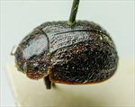
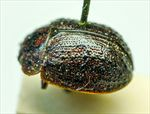
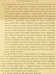

Click on images to enlarge
{kind=link}

Paropsis whittonensis, type specimen, oblique view
{kind=link}

Paropsis whittonensis, type specimen, lateral view
{kind=link}

Paropsis whittonensis, description
Name
Trachymela whittonensis (Blackburn, 1896)
Type specimen
Location: BMNH
Label data: “Type” (red-bordered circle), “6815 Whitton T”, “Blackburn coll. 1910-236.”, “Paropsis whittonensis Blackb.”
Male; Size: 6.8 x 5.0 x 2.8 mm; A-A: 1.18 mm; HCE/BL ~17.5% (estimate from photo of lateral aspect)
Head dark-brown, darker anterior to fronto-clypeal suture; pronotum dark-brown with black elevated longitudinal ridges and black round foveal peaks; elytra dark-brown with fairly sparse but prominent black verrucae.
Original description
[Original description shown in figure, translated from Latin using ChatGPT, 03/2026]
♂. Oval, rather less convex; of greater height (in lateral view), with the highest point placed at or a little before the middle of the elytral margin; fairly shiny; above obscurely roughened, the head in front pitchy, the pronotum black or marked with pitchy, the elytra more or less shaded with pitchy and variegated with black warts; beneath pitchy, more or less reddish, the legs concolorous, the antennae pale reddish, becoming infuscate toward the apex.
Head rather closely but not very finely, scarcely rugulose-punctate. Pronotum wider than long as about 2¼ to 1, from the apex slightly broadened beyond the middle, before the apex distinctly transversely impressed, on the disc less strongly and less densely, not rugulose (coarsely rugulose toward the sides), punctate; sides fairly rounded, not flattened, posterior angles obtuse; scutellum punctate.
Elytra slightly depressed below the humeral callus, at the base scarcely impressed, fairly closely and rather strongly somewhat serially (more coarsely toward the sides) punctate, with rather distinct warts arranged in series; the interspaces toward the sides and toward the apex fairly rugulose (the rugulae somewhat transverse, more or less elongate, and toward the sides intermixed); marginal line as in P. foveata, the humeral callus placed within the margin as in P. foveata; basal ventral segment sparsely finely punctate.
Length 3⅕ lines (~6.8 mm); width 2⅕ lines (~4.7 mm).Notes
Blackburn (1896) deals with T. whittonensis as part of his 'subgroup ii' (i.e., those species without "strongly marked characters", whose greatest height is not or scarcely in front of the middle of the elytral margin and whose elytra are depressed under the humeral callus). Within that group, he characterises it as:
(1) inner edge of humeral callus distinctly nearer to lateral margin of elytra than to suture;
(2) sides of prothorax not at all explanate;
(3) elytra not having a well defined transverse wheal-like ridge;
(4) form not nearly circular, with elytra not wider than long;
(5) prothorax with somewhat evenly rounded sides; only moderately narrower in front than at base;
(6) puncturation of elytra not particularly fine and close;
(7) disc of prothorax (especially in the middle) considerably less closely punctulate [than propria or ruficollis].
T. whittonensis is very likely Ta87, a widely distributed species west of the Great Dividing Range in the eastern Australian mainland states. The specimen is in the middle of the size distribution of that species, its A-A/BL and HCE/BL are well within the range expected for that species and it conforms very closely to typical Ta87 specimens in its external morphology. The type locality of Whitton is well within the geographic range of Ta87.
References
Blackburn, T. 1896, "Revision of the genus Paropsis. Part I", Proceedings of the Linnean Society of New South Wales, vol. 21, no. 4, 637-693 (page 669).
Copyright © 2026. All rights reserved.